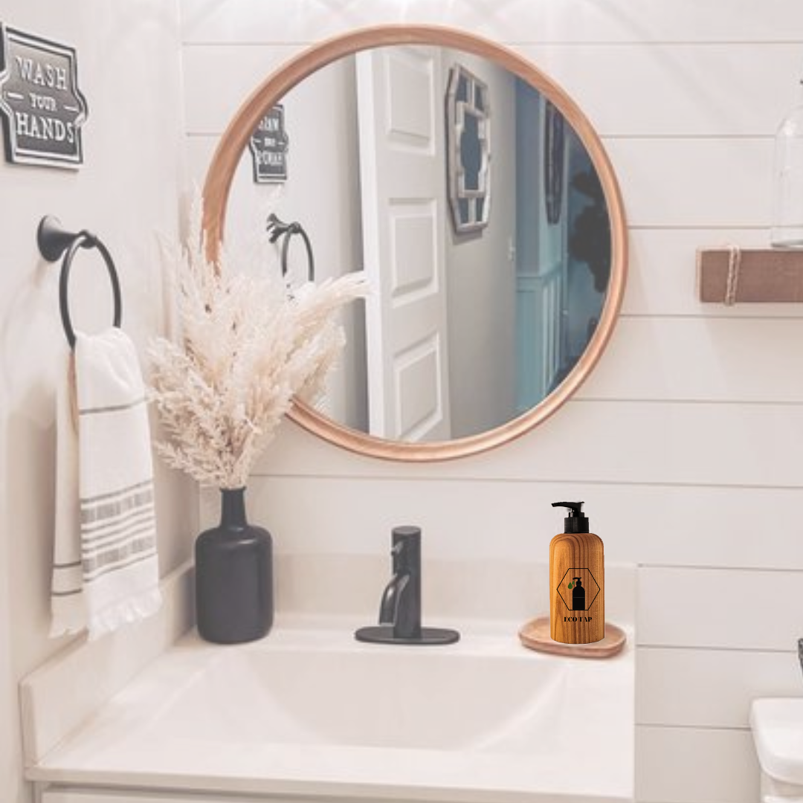
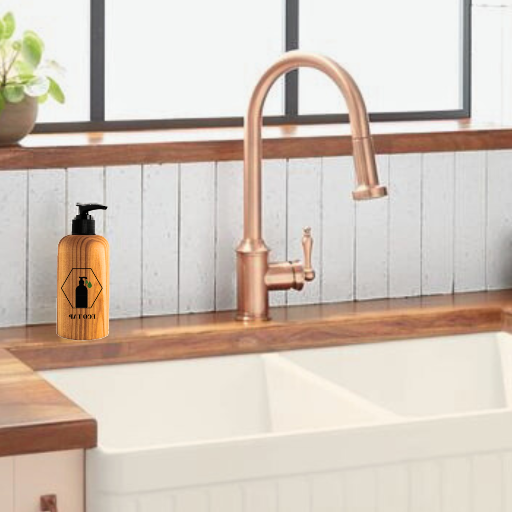

Eco-friendly products contain materials that have been recycled, are easy to recycle, or are gathered from a natural source like bamboo or cotton.
Eco Tap offers several features that make it stand out in the market:
a) Sustainable Material: The dispenser is made from 100% recycled materials, setting a new standard for eco-friendly product manufacturing.
b) Bamboo-Cotton Blend: The composition of 80% bamboo and 20% cotton ensures durability and a natural aesthetic appeal, enhancing the overall user experience.
c) Refillable Design: Eco Tap is designed to accommodate refillable cartridges, reducing single-use plastic waste and promoting a circular economy.
d) User-Friendly Operation: The dispenser incorporates an intuitive, touch-free mechanism, allowing for hygienic and effortless product dispensing.
e) Customizable Branding: Businesses and organizations can personalize Eco Tap with their logos and messaging, promoting their commitment to sustainability.
Eco Tap can be used in every room in your house, as it is available in 3 sizes: 200ml, 400ml, and 700ml.
The 200ml is for small quantities of liquid such as your toothpaste or some cleanser for your face!
The 400ml can be used for your dish soap or even for your detergents!
The 700ml can be used for larger amounts. One of its best features is that the quantity that comes out of every tap is controlled, so you get the amount that is needed without wasting more of the product inside the dispenser!